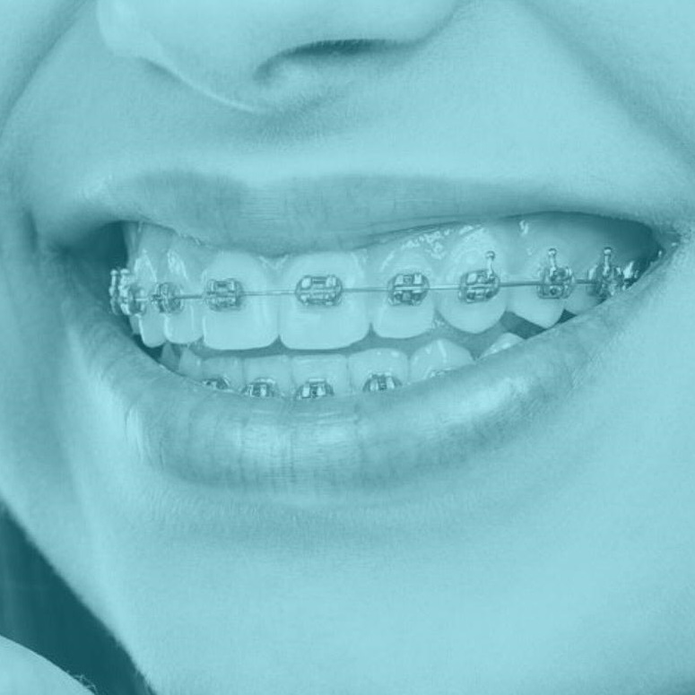
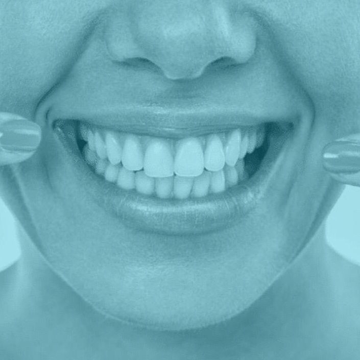
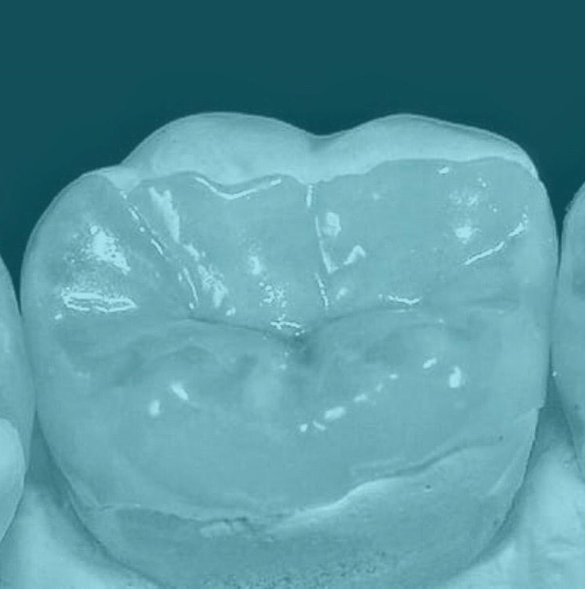
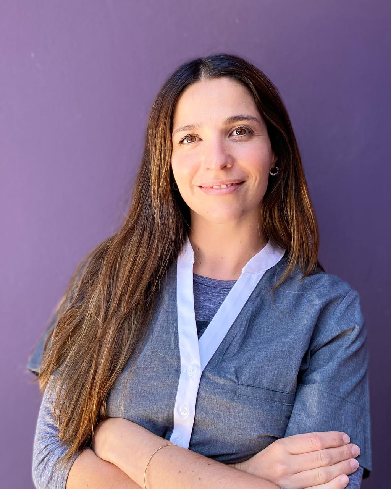
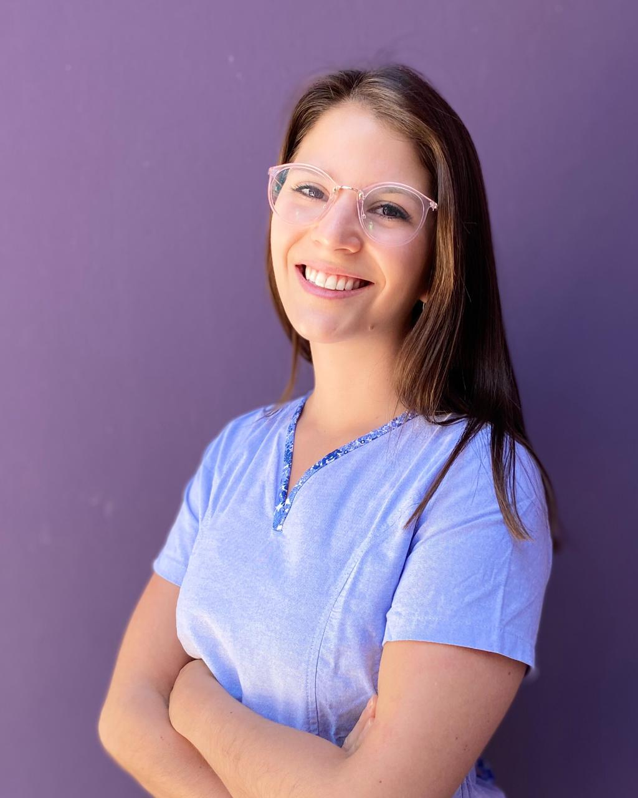
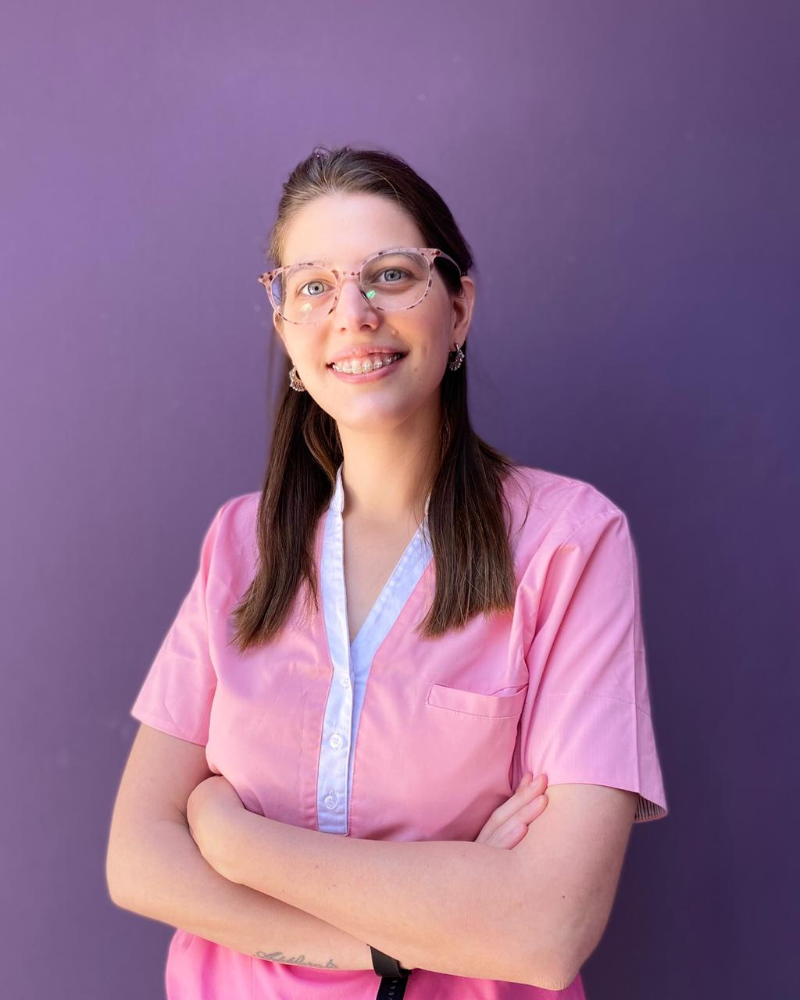
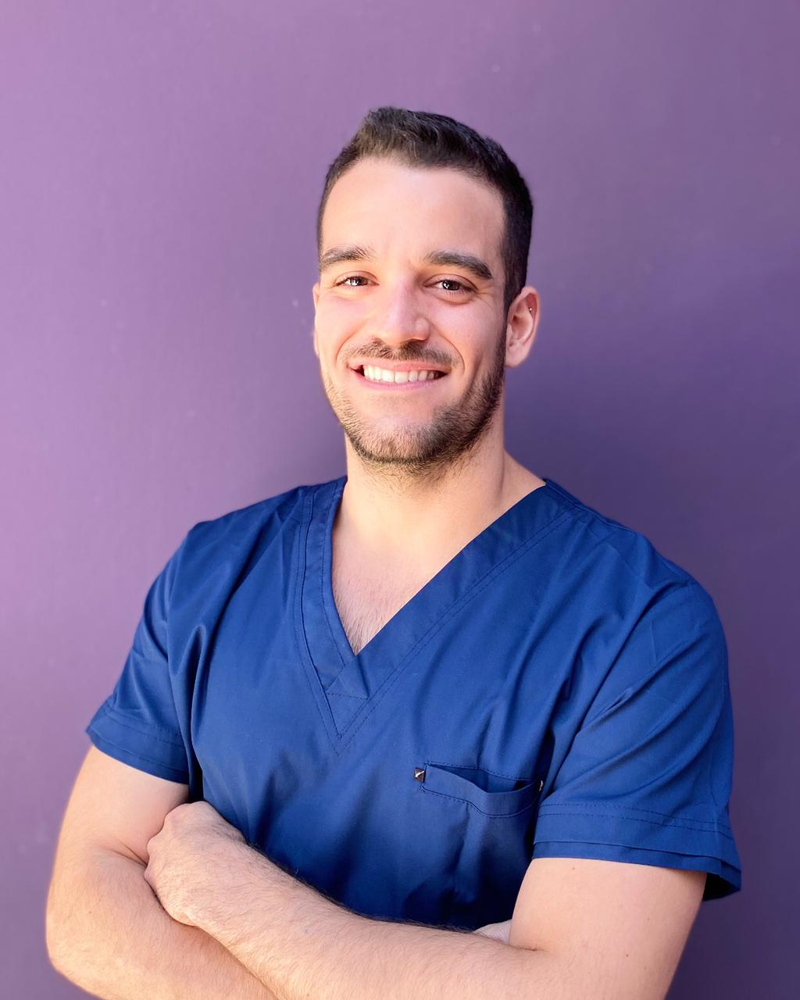

Conocénos

Ortodoncia
Te invitamos a conocer resultados de los tratamientos ortodónticos que ofrecemos, te vas a sorprender!

Blanqueamientos
Los dientes más blancos, marcan la diferencia. Ingresá acá para ver el antes y después en nuestros pacientes!

Incrustaciones
Querés recuperar tus muelas de forma mínimamente invasiva, totalmente estética y en tan solo dos sesiones? Apretá el botón de abajo!
Hola! Soy la Od. Magalí Slaibe Lede
Me recibí en el año 2006 de odontóloga en la Universidad de Mendoza. Desde ese momento, me capacité extensamente para poder hoy brindar el mejor servicio. Entre los años 2010 y 2013 realicé los niveles I y II del curso de posgrado en Ortopedia y Ortodoncia del Grupo Harfin en la Universidad Nacional de Cuyo. Casi en paralelo y ahondando todavía más en la materia, en el año 2014 finalicé el curso Arco Recto de la Fundación Gnathos del Dr. Jorge Gregoret, en la Universidad de Belgrano de Buenos Aires. Teniendo como objetivo lograr los mejores tratamientos para adultos, y entendiendo las necesidades de la vida moderna en cuanto a estética se refiere, realicé la acreditación del sistema KEEPSMILING (ortodoncia invisible), el cual ha probado ser un éxito tanto en el uso como en los resultados alcanzados. También, realicé cursos y ateneos con la Dra Boetsch, con la intención de seguir actualizada en el mundo de la ortodoncia, incluyendo como opción de tratamiento la ortodoncia autoligante, con el sistema CCO (Complete Clinical Orthodontic). En ALINEARE me ocupo de la Ortodoncia fija de pacientes adolescentes y adultos, soy una profesional muy responsable y dedicada al momento del tratamiento. Espero que podamos vernos pronto y me conozcan en la consulta, se saquen todas sus dudas y podamos comenzar su tratamiento! Soy feliz haciendo hermosas sonrisas!

Hola, cómo están? Soy Melisa Verdugo.
Tengo 27 años y me recibí de odontóloga en la Universidad de Mendoza en el año 2016. En 2017 comencé a especializarme en la Universidad Nacional de Córdoba en Prótesis fija, removible e implantología. Actualmente ya termine de cursar y me encuentro preparando el trabajo final para obtener mi título de especialista. En Alineare me desempeño en el área de odontología general de adultos y también en la parte de rehabilitación. Qué significa esto? Rehabilitación engloba lo que serían prótesis removibles, pernos corona, carillas, coronas, incrustaciones e implantes dentales. También soy miembro ITI que es una organización a nivel mundial de implantología que nos permite actualizarnos constantemente y estar en contacto con colegas de todo el mundo. Permanentemente estoy capacitándome para brindarles la mejor atención y las últimas tendencias en mi área. Espero que hayan podido conocerme un poquito más! Los esperamos en Alineare!

Holaaa! Soy Angeles Maudet
Tengo 29 años y soy odontóloga recibida en el 2016 de la Universidad de Mendoza. Desde entonces hasta ahora he asistido a muchísimos congresos, posgrados, conferencias y todo lo que esté a mi alcance para darle a mis pacientes la mejor experiencia y atención odontológica. Me especializo en ODONTOPEDIATRÍA, parte de la odontología que engloba prevención, odontología para embarazadas, ortopedia (ortodoncia interceptiva), entre otros. Aunque también tengo pacientes +20. Actualmente no solo trabajo en ALINEARE , sino que también escribo columnas sobre temas interesantes de odontología en el DIARIO ONLINE EL COGOLLITO y soy adscripta en la Cátedra Integral Niños de la Facultad de Odontología de la Universidad de Mendoza. Soy una profesional muy dedicada, me gusta mucho estar pendiente de mis pacientes para que no sea una tortura ir a hacerse tratamientos, trato de que sea una experiencia amena y divertida, también estoy al tanto de los ultimos tratamientos, por lo que será una visita de alta calidad. Espero que podamos conocernos pronto en tu control de boca sana, Angi.

Hola, cómo va? Soy Emiliano Flores
Tengo 27 años y me recibí de odontólogo en el año 2017 en la Universidad de Mendoza. En Alineare me dedico a realizar odontología general en adultos, sobre todo en la parte de operatoria (restauraciones dentales), área en la cual estoy bien capacitado, además de ser extremadamente detallista y minucioso. Te vas a ir con una obra de arte!
Pero en odontología cuando no se puede salvar un diente lamentablemente hay que extraerlo y ahí también te cruzas conmigo: realizo cirugías de diferente complejidad, para las cuales me preparo constantemente realizando diferentes posgrados.
Qué tipos de cirugías realizamos? Extracciones simples, extracciones complejas, extracciones de dientes retenidos (incluyendo muelas de juicio), liberación de caninos retenidos.
Me comprometo con cada paciente a la hora de planificar y realizar la cirugía, al igual que al hacer un seguimiento postoperatorio.
Ahora que ya me conoces un poco más, no te dejes estar y cuando lo creas oportuno, te espero para una consulta para ver que tipo de tratamiento necesitas!
